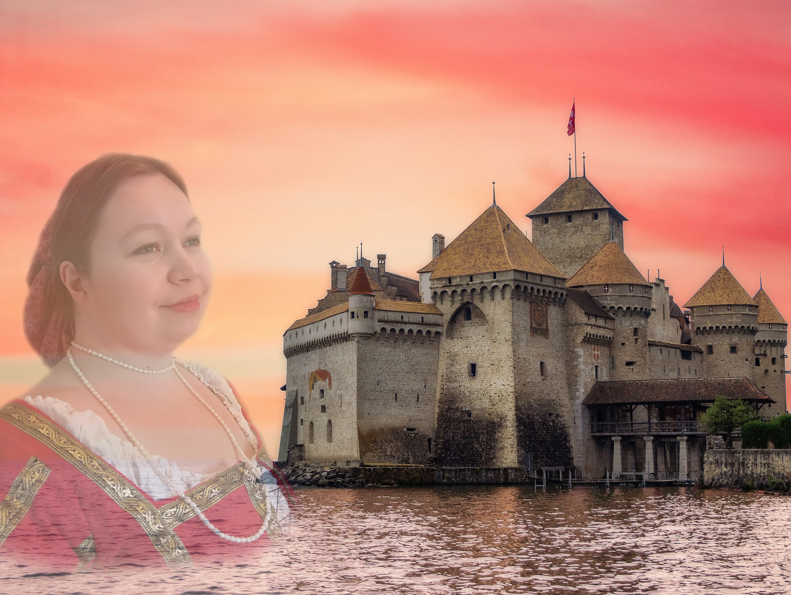

Welcome to Anna Aslin's home page
Anna Aslin is a fantasy romance author living in Tampere, Finland. She fell in love with everything fantastical in her early years. If a story had magic, dragons, witches, castles and sword fights, they were her kinds of stories.
She started to write her first novel in her teens but publishing has taken some more time because as we all know: life happens.
On this page you will find out about her works, text samples, maps, images and more. Do not forget to join her newsletter if you want to hear the latest news.